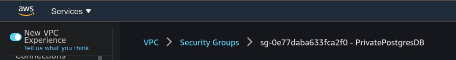
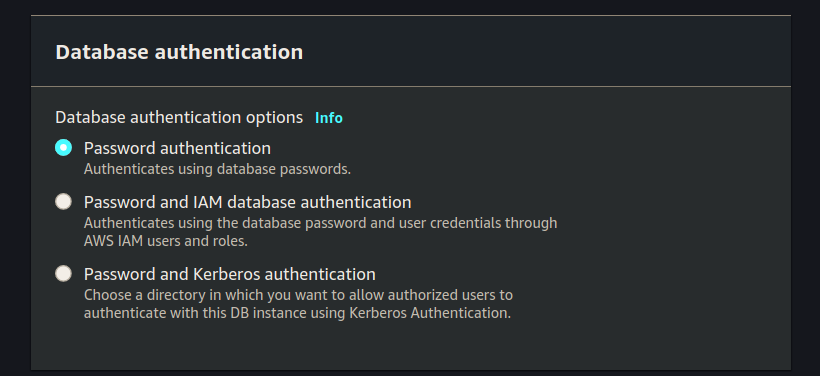

Walkthrough: RDS
In this walkthrough we will be moving our PostGIS database from the EC2 that hosts our web application to a dedicated Amazon managed RDS.
We will be editing our VPC in the following ways:
- creating two new private subnets
- create a new subnet group from the two new private subnets
- editing our security groups
This will allow us to create a new RDS on our VPC.
To interact with this VPC we will also be creating a new EC2 instance that will serve as a jumpbox.
Create RDS Networking Resources
We will be adding this RDS to the VPC of our project. For the purposes of this walkthrough it will be the VPC of your Todo Tasks API deployment.
Navigate to VPC
Navigate to the VPC dashboard by searching for the VPC service.
Create Subnet
From the side bar menu on the left scroll down to and select Subnets which will show you a list of all the subnets associated with this region. We want to add a new subnet so click the orange Create subnet button:
Select Correct VPC
The first section of the Create subnet form is the associated VPC. Make sure to use the VPC for your project:
Subnet Settings
After selecting the VPC to associate with your new subnet you can add both the subnets. For each subnet we will be setting:
- name
- availability zone
- CIDR block
Set-up the first subnet:
Click add subnet and then set up the second subnet:
Click the create button.
Create Security Groups
Now that our deployment is changing we need to update our existing security groups. We will be deleting the existing security groups associated with your VPC and we will be creating three new ones:
- public Web API SG (inbound HTTP/S, outbound HTTP/S + postgres 5432)
- create PrivatePostgresDB SG (inbound 5432, outbound HTTP/S)
- create <Name>SSH SG (inbound SSH for <name> IP)
In VPC dashboard scroll down the left hand menu to security groups:
PrivatePostgresDB
Create a new Security Group to allow postgres traffic to your Public Web API:

Set it’s inbound rules:
You will search for project name, but then will have to select both of them.
Then set the outbound rules:

Click the create button and then return to the Security Group dashboard, the easiest way is by clicking the breadcrumb link:

PublicProjectNameAPI Security Group
Create a new Security Group to allow HTTP/S traffic to your Public Web API.
Set the name, description and VPC:
Set the inbound rules:
Set the outbound rules:
Click create. After creating this security group we need to edit the inbound rules of our previous security group using this new security group.
Edit PrivatePostgresDB SG
Click the breadcrumb back to Security Groups. You are looking for your PrivatePostgresDB (double check your VPC) and then click edit inbound rules:
Select the PublicProjectNameAPI security group you created in the previous step:
Click save to update the inbound rules.
Create SSH Group
Create the Security Group for SSH access:
Name, Description and VPC:
Inbound rules:
Outbound rules:
Create JumpBox SG
Add the final SG we will need for our jumpbox:
Name, description, VPC:
Inbound rules:
Outbound rules:
Create Subnet Group
With our Subnets and Security Groups created, let’s create a subnet group that will be used by our RDS.
Search for the RDS service:
From the RDS dashboard scroll the left hand menu bar down and select the Subnet groups option. From here click the orange Create DB Subnet Group button:
This will take you to the Create DB Subnet Group web form.
Set the Name, Description, and VPC:
Select the two availability zones you used for your security groups, and select your two subnets:

note
- select the AZs of your 2 private subnets (should be first and second choices)
- select the 2 subnets (make sure they are both private - should not be 10.0.0.0/24)
Create RDS
Now that we have our database subnets, subnet group and have updated our security groups, let’s create the RDS instance. Navigate to the RDS dashboard.
From here click the create database button.
Creation Method
Select Standard create:
Engine Options
Select PostgreSQL Version PostgreSQL 12.4-R1:
Templates
Select Free tier:
Settings
Set DB instance identifier, Master username, Master password and Confirm password:
DB Instance Size
Leave all the default settings for DB Instance Size:
Storage
Leave all the default settings for Storage:
Availability & Durability
Since we are using the free-tier we aren’t even allowed to create a standby instance. It should be greyed out, so leave this section untouched:
Connectivity
Select your VPC for connectivity:
Click the dropdown arrow for Additional connectivity configuration.
Set the Subnet group (using the one we created earlier):
Set the Existing VPC security groups (using PrivatePostgresDB):
Database Authentication
Leave the Database authentication section at the default value Password authentication:

Additional Configuration
Click the Additional configuration drop down arrow.
Set Initial database name (make sure to use the database name your project uses):
De-select any selected options under Backup, Performance Insights, Monitoring, and Log exports:
note
AWS RDS will automatically create backups, perform performance insights, monitor the RDS service. For the purposes of this class we will not be exploring any of these concepts, so we are turning them off. In a real world database you would configure each of these things as they provide redundancy and information for troubleshooting.
For the remainder of the form it should be all defaults, confirm yours with:
We have completed all the information necessary to create our RDS instance so click Create RDS.
Create Error
If you get the following error:
You did not create your DB Subnet Group before creating your RDS instance.
View RDS Instance
You will need to view your RDS instance, we will need the RDS endpoint after it is done initializing.
Create EC2 Jumpbox
While we are waiting for our RDS instance to spin up let’s create the Jumpbox we will be using to interface with our RDS instance.
Our RDS instance is on a private subnet, which means it’s only accessible to internal VPC network. We can’t simply PSQL into the RDS from our local computer. We will first need to create an intermediary jumpbox. This EC2 will have one responsibility: provide administrative access to the private RDS.
Create EC2 Instance
Search for the EC2 service, and then click the create button.
From here we will be spinning up a new Ubuntu EC2 instance with the following information:
- AMI: ubuntu 18.04
- type: micro
- VPC & subnet: your vpc public subnet
- User data script: enter a first time setup script
Following are the images that will guide your process:
Network, Subnet, Auto-assign Public IP:
At the very bottom of the form is the Advanced Details drop down arrow. Click it and paste in the following script to the User data section.
#!/bin/bash
apt update -y
apt upgrade -y
apt install -y postgresql-client
note
The image isn’t correct, but does illustrate where to add the following script.
Add tags to make your EC2 distinguishable from others:
On the next page of Security Groups choose the Jumpbox Security Group we created above.
As a reminder it allows inbound traffic on port 22 to your computer. It allows outbound traffic on ports 80, 443, and 5432.
Finally set the key pair for the jumpbox. It’s easiest to use the key you already created in this class:
note
As a best practice you would typically have a different key-pair for this jumpbox than from the key for your Web API EC2, however you are not required to do that in this class.
Connect to RDS
Now that we have created our RDS jumpbox, check back on your RDS instance. It probably has an RDS endpoint we can use to connect to the database. We will need that RDS endpoint in order to access the RDS from our jumpbox.
SSH into the jumpbox.
From here use psql client to connect to RDS.
psql -h rds-poc-db.cq2s2klvmrfq.us-west-2.rds.amazonaws.com -U launchcode -d project_name
You should use your RDS public endpoint, and your database name.
Update Systemd Service Configuration File
Now that our Database is setup properly we need to update our deployed API to use this new RDS instance.
SSH into the EC2 of your deployed API.
From here we will need to update the Systemd configuration file. It is currently using DB_HOST=localhost we need to update it to DB_HOST=your-rds-endpoint. This file lives in /etc/opt/project-name and more than likely is named: project-name-app.config.
After updating your configuration file you will need to stop and start the project service: sudo systemctl restart project-name.service.
After restarting the service check the journalctl logs to make sure it connected to the database properly: journalctl -fu project-name.service.
If your application doesn’t start cleanly let your instructor know. It is almost certainly due to a misconfiguration with your RDS instance setup and you will need to troubleshoot it together.
Bonus: Clean up EC2
Now that we are using RDS for our relational database needs we can remove some unecessary dependencies from the EC2 hosting our web application. It no longer needs docker, docker-compose, or the existing docker container.
Review
We migrated our embedded database as a docker container to AWS managed RDS.
To do this we:
- create new subnets
- create a new subnet group
- create RDS instance
- create an EC2 RDS jumpbox
- SSH into the RDS jumpbox
- Connect to RDS from jumpbox
- Configure RDS
- update security group rules
- update deployed API